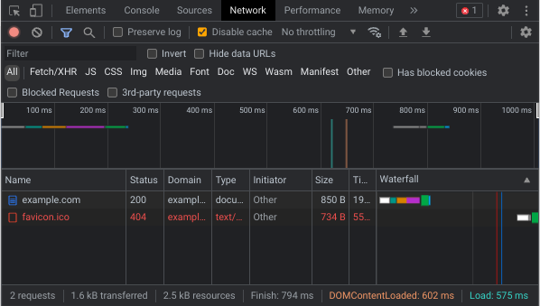
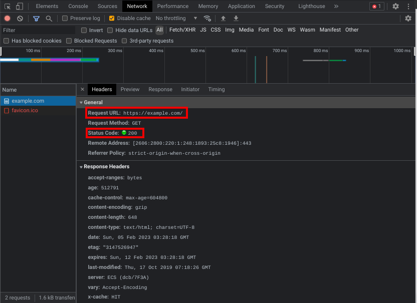

Many people ask me (3kh0) how I get the games on my site, and now I can finally introduce the best (not underrated) tool, the network tab in your local inspect element! (I will be doing this in chrome since the layout in firefox is different and more people use chromium based browsers)
I am going to just make a silly assumption that you know how to open inspect element on your browser/device, if you do not know how, look it up. I know this might look a little scary like omg what do all these crazy buttons do!??!/1 I will guide to step by step on what all this cool stuff is. So we will go from top to bottom, and we will only go over what is needed to know how to game rip. If you want to learn more, just play around with it or consult the wiki. THe screenshot above is the search page for google, (it is just google.com) and you can see, there is alot of stuff, that is because google is complex as fuck, so we will try something more simple.
There something more simple. I went to the website example.com and this is what I see in my network tab. Focus on the chart where is has things like example.com and favicon, this is our request list, this is a list of all the requests that your browser had to make to assemble this page that you are looking at right now. Now you will want to click on the listing that says example.com
Wow look at all that useless stuff! I highlighted the only two things you need to look at and that is the Request URL and Status Code, that is pretty much all you need. Now you might be asking, well what is that red listing that says favicon? Ok, go click it, now look at the Request URL and Status code. It is requesting https://example.com/favicon.ico but the problem is, the server replied with code 404, what this means is that the server can not find this favicon.ico file, so that is why it is red. But notice how the webpage still looks fine. When game ripping, you need to make sure you ignore some of these requests. Things like the favicon are often 404 errors.
Alright, just as pratice, we are going to rip this website example.com just as a start. So open up your file explorer or any file indexing app and create a new folder, put the name as example. Now go back to the website, do ctrl+s (For Macs this is command+s) and it should save the HTML file for this page. If it pulls up a finder window asking where to save it, make sure you save it in your "example" folder. Now go to your example folder, right click the file you downloaded, open it with a web browser, and you should see the example.com website there. Congrats, you just ripped a website! Well this was only one file, so it was pretty easy. Lets try something harder.
Now I have a site with many files, like HTML, CSS, and JS files. Now if you do not already have a code editor like VS Code, I would download that right now, don't have it? Click here. I am not going to teach you how to use VS Code, I would find a tutorial online or something. Now that you have a code editor, this will make it much easier. Now create another folder, call it test1 or something, make sure you know where it is! Now open VS Code and click file and open folder, go to your folder, click select or ok and you should be in your folder. Here is the website. Now don't cheat and just copy it off of the GitHub repo, you are not learning silly. Ok first open up the network tab, do a refresh. Why do I need to reload it again? If you open it after the page has loaded then sometimes you miss some requests that were made before you opened the panel. Now note the file structure, you need to copy everything in 3kh0.github.io/personal-site/ anything else that goes to any other domain, you can leave alone. So download the homepage, drop it into your folder, and open it in your browser. Now it looks a little different than the original link. Open up the network tab and see what is wrong, and OMG THAT IS ALOT OF RED! Click on a few of them, most of them will have the Status code of 404, which means that your web browser can not find the file that is on your computer, so we will need to get those, note the request URL, hey I know where that would be! Now using VS Code, download the file that is on the server, on to your computer. Make sure it is in the right place, so like a JS file that is in the js folder on the site should be in a js folder in that test1 folder with all your other stuff, now make sure you only get stuff from the /personal-site/ folder, nothing else. Once you have gotten the main page to work, try clicking on the links on the top, it brings you to a 404 error. You know what do to! Download the pages and assets that are needed. Once you are done, compare with the GitHub repo. If you got it spot on (cheater?) then good job! You are good at this. If the folder on your computer looks very different from Github repo, game ripping might not be for you. So find something else, idk. Good the skids are gone, moving on!
Now since you made light work of that repo, it is time you try something harder, see if you can rip a game off of itch.io. Make sure you know your limits, this kind of basic of game ripping will not work for online games. Big online game websites like poki have measures in place to stop game ripping such as cookie authentication, the way to bypass this to save from the network tab, if you right click the listing for the item, you should be able to save it, I have had varied success with this. As always, if you need more help or something went wrong, hit me up on discord.
- Echo
P.S. Next post will be about how this website came to be! Stay tuned :)